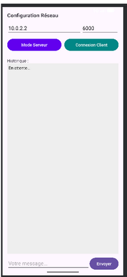

Application Mobile Communicante (TCP/IP)
Développement d'une application Android permettant le contrôle à distance de services métiers. L'objectif était de programmer des "sockets" réseau en Java pour échanger des flux de données en temps réel avec un serveur.
1. Contexte & Objectifs
Comprendre les protocoles réseaux (TCP/UDP) est essentiel, mais savoir les programmer permet de créer des outils d'administration sur mesure. Ce projet visait à développer un logiciel applicatif sous Android capable d'envoyer des commandes d'exécution et de transférer des trames vers un serveur distant, remettant au centre le paradigme fondamental de l'architecture Client/Serveur.
2. Solutions Techniques Déployées
- Programmation Orientée Objet (POO) : Développement de l'application en langage Java, en respectant la séparation entre le code métier (les connexions réseaux) et le code graphique (boutons, champs texte).
- Architecture Client/Serveur : Implémentation des classes
Socket(pour la connexion TCP fiable) etInetAddresspour la résolution d'adresse. - Gestion des flux (I/O) : Écriture et lecture des trames binaires échangées à travers le réseau à l'aide des flux
DataInputStreametDataOutputStream. - Conception UI/UX : Création d'une interface graphique (XML) intuitive permettant à l'utilisateur final de renseigner l'IP du serveur cible, le port d'écoute et les commandes à transmettre.
3. Résultats & Validation
L'application est fonctionnelle et compilée (fichier APK). Elle parvient à établir le "Three-way handshake" TCP avec le serveur, transmet la commande de l'utilisateur de manière fiable, et gère proprement les erreurs de timeout réseau.

Interface de contrôle : Vue de l'application Android finalisée, permettant la saisie de l'IP cible, du port TCP et de la commande à envoyer au serveur.
4. Bilan technique & Expertise acquise
Double casquette (Dev & Ops) : Développer cette application m'a permis de comprendre le réseau depuis la perspective du développeur applicatif. Il ne s'agit plus seulement de configurer un routeur, mais de comprendre comment une application forge et injecte sa charge utile (Payload) directement dans la couche Transport (L4) du modèle OSI.
Améliorations futures : À terme, je pourrais faire évoluer cette base de code pour développer une application mobile de supervision interne, capable d'interroger directement l'API de serveurs (comme GLPI ou Zabbix) pour remonter des alertes réseaux directement sur smartphone.